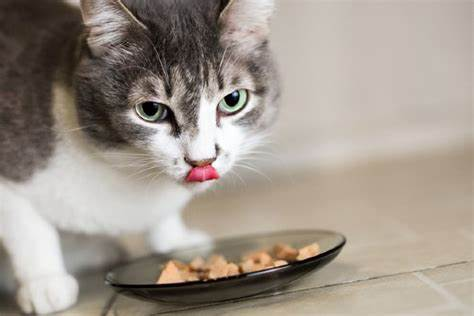
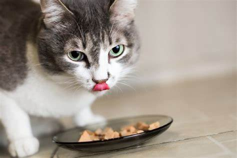
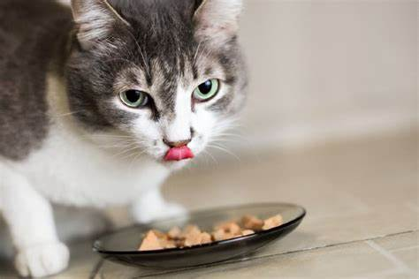
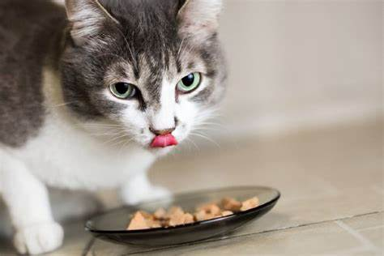

A Ração Úmida Golden Gourmet Gatos Castrados Frango é um alimento completo e enriquecido com vitaminas e minerais que atendem
as necessidades dos gatos castrados a partir dos 6 meses de idade, por contar com L-Carnitina possibilita um equilíbrio ideal de nutrientes.